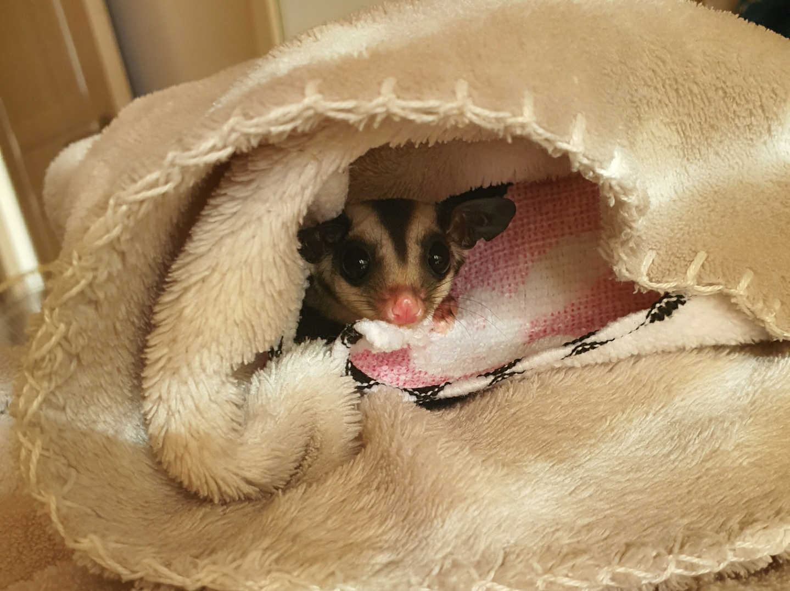

The sugar glider (Petaurus breviceps) is a small, omnivorous, arboreal, and nocturnal gliding possum belonging to the marsupial infraclass.

The common name refers to its predilection for sugary foods such as sap and nectar and its ability to glide through the air, much like a flying squirrel. They have very similar habits and appearance to the flying squirrel, despite not being closely related—an example of convergent evolution.